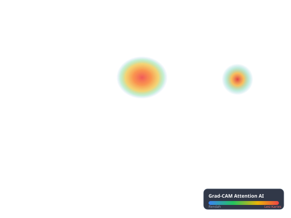

RISIKO RENDAH
Skrining AI Terakhir
88
/100
Kondisi Gigi Cukup Bersih
Email gigi bebas dari kavitas besar. Terus jaga kebersihan batas leher gusi anak secara rutin.
Rutinitas Sikat Gigi Hari Ini
Streak 4 Hari 🔥Sikat Gigi Malam Hari
Panduan 2 menit dengan lagu & timer
Edukasi & Tips Posyandu
Camilan Ramah Enamel Gigi
Apel, wortel, dan keju membantu membersihkan sisa plak alami

Posisikan Rongga Mulut di Dalam Bingkai
Buka bibir anak perlahan hingga gigi seri & geraham terlihat
Pilih Skenario Kasus Klinis (Demo Juri)
Preset AI
🟡
RISIKO SEDANG
Ditemukan bercak karies dini dan penumpukan plak di leher gigi.

Indeks def-t Medis (Standar WHO)
1
Karies Dini (WHO Kategori Rendah)
d: 1
e: 0
f: 0
Odontogram Gigi Susu Anak (Notasi FDI)
20 Gigi SusuTemuan Deteksi Komputer Vision
Pipeline Deep LearningRekomendasi Tindak Lanjut
02:00
Siap Mulai
🦷
Tekan tombol mulai untuk memandu gerakan sikat gigi anak
Panduan Gizi Ramah Gigi
Kalsium & Susu
Menguatkan email gigi susu. Hindari dot susu manis saat tidur malam.
Waspada Makanan Lengket
Permen gulali & cokelat lengket mudah diubah bakteri menjadi asam perusak.
Bilas Air Putih
Biasakan anak berkumur air putih setelah makan makanan manis.
Pasta Gigi Berfluoride
Gunakan seukuran biji beras untuk balita di bawah usia 3 tahun.
Puskesmas Dayah Sehat
Poli Gigi Anak • Buka Senin-Sabtu
📍 1.2 km dari lokasiPosyandu Melati Indah
Kader Ibu Rahma • Jadwal Timbang Bulanan
📍 450 m dari rumahRS Khusus Gigi & Mulut (RSGM)
Dokter Gigi Spesialis Pedodonti (KGA)
📍 4.8 km